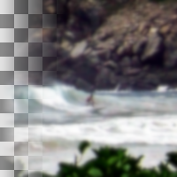

Gaussian Blur
Performs an averaging of neighboring pixels with the normal distribution as weighting
Size X
Standard deviation for the horizontal axis
name: std-dev-x
type: double
default: 1.50
minimum: 0.00
maximum: 1500.00
ui-minimum: 0.24
ui-maximum: 100.00
ui-gamma: 3.00
ui-step-small: 1.00
ui-step-big: 10.00
ui-digits: 2
unit:pixel-distance
axis:x
Size Y
Standard deviation (spatial scale factor)
name: std-dev-y
type: double
default: 1.50
minimum: 0.00
maximum: 1500.00
ui-minimum: 0.24
ui-maximum: 100.00
ui-gamma: 3.00
ui-step-small: 1.00
ui-step-big: 10.00
ui-digits: 2
unit:pixel-distance
axis:y
Filter
How the gaussian kernel is discretized
name: filter
type: enum
Abyss policy
How image edges are handled
name: abyss-policy
type: enum
Clip to the input extent
Should the output extent be clipped to the input extent
name: clip-extent
type: boolean
default: True
pads: input output
parent-class: GeglOperationMeta
categories: blur
source: operations/common/gaussian-blur.c
 This page is part of the online GEGL Documentation, GEGL is a data flow based image processing library/framework, made to fuel GIMPs high-bit depth non-destructive editing future.
This page is part of the online GEGL Documentation, GEGL is a data flow based image processing library/framework, made to fuel GIMPs high-bit depth non-destructive editing future.